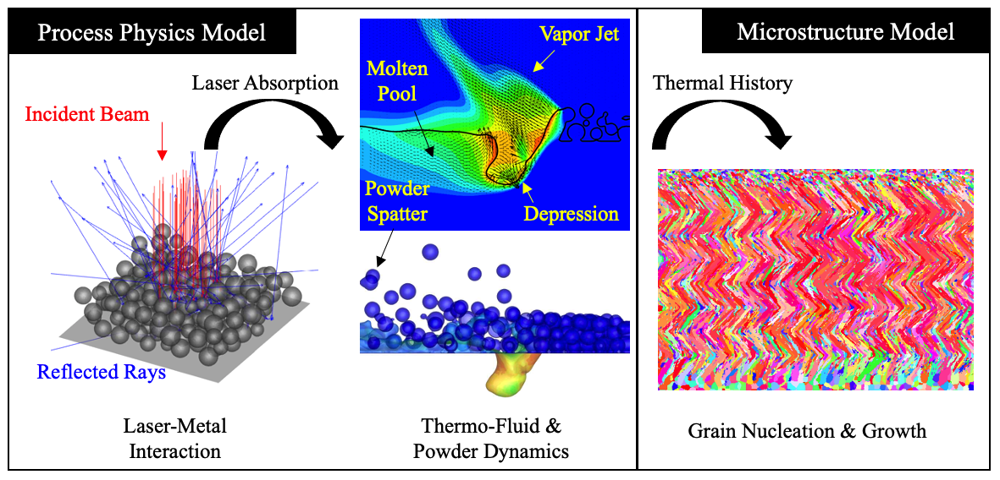
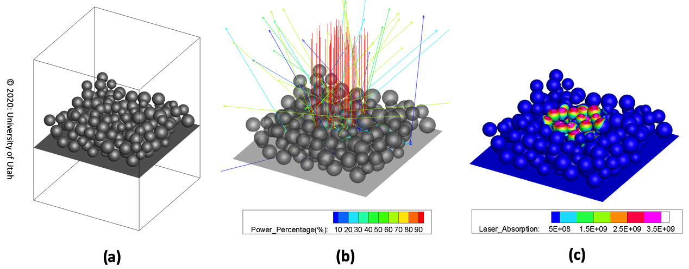
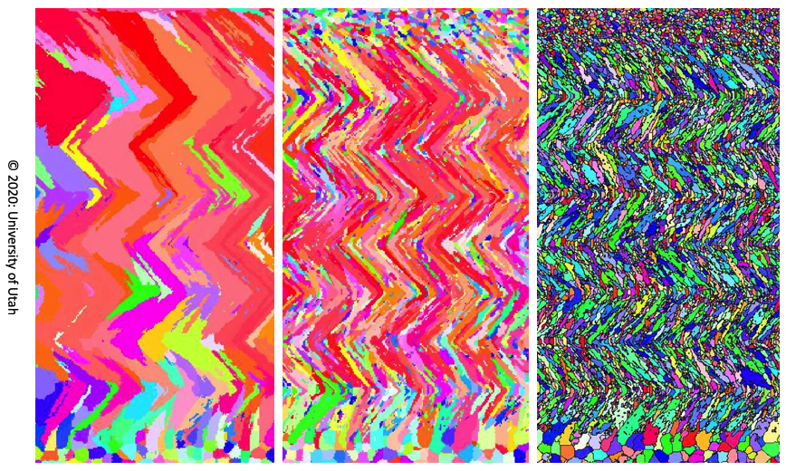

Metal Additive Manufacturing (MAM) is an emerging technology
whose potential of achieving flexible geometry for metallic parts has revolutionizing
impact on the manufacturing industry. Similar to many newly-developed manufacturing
techniques, the maturation of MAM is hindered by two principal issues. First, the
underlying science, especially during the building process of MAM, is not well understood,
which brings the second issue, that the relationships between the Process, Structure,
Property, and Performance (PSPP mapping) are not well understood. Not rarely, the success
of a build relies on time-costly trial-and-error experiments that find the optimal
selection of process parameters in large parameter space. Unfortunately, the optimal
parameters cannot transfer among different materials and machines. The quality and
consistency of MAM-built parts still need to be improved for demanding applications,
e.g., aerospace and aeronautics.
My research is to develop computational models to simulate the MAM process and the
microstructure evolution in the MAM-built part. Quantitative information that is
difficult to extract by experiments can be obtained by the models, e.g., the
three-dimensional temperature, fluid flow, pressure, grain sizes, and texture. This
quantitative information facilitates the understanding of the fundamental science in MAM
and consequently advances the knowledge of PSPP mapping for MAM.
Specifically, I develop a multi-physics process model to simulate as closely as possible the
complex and intertwined physical phenomena in a MAM process. The temperature in the built
part as a function of time and space is extracted from the process model, which is then fed
into a structure model. The structure model simulates the grain nucleation and growth and
predicts the grain size and morphology in the built part. These models are developed based
on principles of fluid mechanics, thermodynamics, heat transfer, and some particular
aspects of material science.

Background
Laser Powder Bed Fusion (LPBF) is a typical MAM process. A scanning laser melts a
pre-deposited powder bed layer-by-layer to build 3-dimensional build. Source of the
video:
Lawrence Livermore National Laboratory.
Powder Bed Generation and Ray Tracing
This project is aimed to set the foundations for the subsequent multiphysics simulations
for MAM processes. In this project, a powder bed generation model is used to create the
structure of a powder bed as in LPBF processes. Then the initial laser-metal interaction is
simulated using the ray-tracing algorithm. The laser absorption distribution on the powder
surfaces is obtained from ray-tracing, which will trigger the melting and vaporization of
the metal.
A randomly packed powder bed is generated by a "rain-dropping" algorithm
(Jodrey, W., et al. Simulation (1979)).
The powder bed is then represented by the level-set function. Based on the level-set field,
the ray-tracing algorithm is implemented to track the multiple reflections of laser beam on
powder surfaces (governed by Fresnel equation), which eventually provides the absorption
distribution.

Powder bed generation and ray-tracing algorithm. (a): A powder bed generated by the
PACKS algorithm. Average powder diameter is 50 micrometers. (b): Ray bundles are shot
from top (red rays) and each ray is traced for its multiple reflection on powder
surfaces. The tracing is stopped when the ray leaves the domain or its power is below
1 %. (c): Collect the absorbed energy from each ray and the absorption distribution
on the powder surface can be obtained.
Cellular Automata Simulation of Grain Nucleation and Growth
A simplified model considering only heat conduction simulates the deposition process
and the thermal history (temperature as a function of time and space) for a Direct
Laser Deposition (DLD) process. A sample build with two layers (each layer has
five scans) is shown in the video.
Demonstration of the Cellular Automata simulation. The bottom right figure shows a
isometric view of the temperature field from a single scan track. This thermal
history is fed into the CA model to predict the grain growth. The top left video
shows the center plane (a X-Y plane in the bottom right figure). The red and green
arrows indicate locations of the horizontal section (a X-Z plane) and the cross
section (a Y-Z plane), shown in the bottom left and top right video, respectively.
The initial grains are randomly generated. It is observed that the grains are melted
and grows towards the scanning direction upon the solidification (epitaxial growth).

Simulated grain structures by the CA model. The sections are cut from the center
plane of a thin-wall build (multiple layers with only one scan track per layer).It is
found that by increasing the nucleation rate in the CA simulations (from left to
right), the grain structures are coarse columnar (left), fine needle-like columnar
(middle), and "sandwich" in which layers of columnar and equiaxed grains coexist. All
the grains have a zigzag shape caused by the zigzag scanning pattern in building the
thin-wall. These grain structures can also be commonly observed by the EBSD
experiments. This result indicates that the nucleation condition in MAM processes can
have significant influence on the build grain structure. See more details in
Li, X., et al., Computational Material Science
(2018).
Powder-Gas Interaction in Laser Powder Bed Fusion
A toy problem to test the powder-gas interaction in a setup where a set of four powders
are placed besides a free jet with a velocity of 500 m/s. This setup is intended to
mimic the powder-gas configuration in laser powderbed fusion processes. The model can
capture the entrainment and ejection of powder with respect to the jet, as well as
the collisions between the powders.
Multiphysics simulation of a stationary laser beam illuminated on a two-dimensional
powderbed. Although in 2D, the simulation generally captures the key physical
phenomena in LPBF, including powder melting and merging, formation of depression zone
(keyhole) and metal vapor jet, the powder entrainmenent and powder ejection. Comparing
with the X-ray imaging result in
Zhao, C., et al. Scientific Report (2017), the
simulation has faster rate of keyhole drilling, which can be attributed to the lack of
resistance by surface tension from the third dimension. More details on the
validation, analyses and quantification of the powder-gas interaction in the
simulation can be found in
Li, X., et al. Additive Manufacturing (2020).
The two-dimensional model has been extended to three-dimension. A demonstration of the
3D model capability is shown in the
Home Page.
Current, the 3D model is used to reveal the mechanism of powder spattering under
different processing conditions: varying ambient pressure, laser power, and scanning
speed. More information is to be divulged in two future publications.